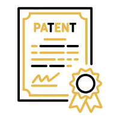

محامون متخصصون في الملكية الفكرية في السعودية. استشارة وتمثيل قانوني.
يضم تخصص الملكية الفكرية في أفضل محامي خدمات حماية العلامات التجارية وبراءات الاختراع وحقوق المؤلف للأفراد والشركات في السعودية، من التسجيل الأولي وحتى مكافحة التقليد والتزييف.
في اقتصاد يعتمد بشكل متزايد على الابتكار والعلامات التجارية، تصبح حماية الملكية الفكرية استثمارًا ضروريًا لا رفاهية قانونية. يغطي هذا التخصص كل ما يحتاجه صاحب علامة تجارية أو مخترع أو مبدع لحماية حقوقه في السوق السعودي.
نقدّم خدمة تسجيل العلامات التجارية لحماية اسم أو شعار عملك، وبراءات الاختراع والملكية الصناعية للمخترعين والشركات التقنية. لأصحاب المحتوى الإبداعي، نقدّم حقوق المؤلف والنشر، وللشركات التي تواجه منتجات مقلّدة، نقدّم مكافحة التقليد والتزييف. كما نساعد في حماية الأسرار التجارية الحساسة لنشاط الشركة.
يلجأ لهذا التخصص أصحاب المشاريع التجارية الجدد الراغبين في حماية علامتهم قبل الإطلاق الرسمي، والشركات التقنية التي طوّرت منتجًا أو حلاً مبتكرًا، وأصحاب المحتوى الإبداعي كالمؤلفين والمصممين، إضافة إلى الشركات التي اكتشفت منتجات مقلّدة تحمل علامتها التجارية في السوق.
يبدأ التواصل بوصف موجز لما تريد حمايته، يليها تقييم من محامٍ متخصص في الملكية الفكرية، ثم خطة عمل تحدد نوع التسجيل المناسب والمدة المتوقعة. عملية تسجيل العلامة التجارية عادة ما تستغرق عدة أشهر عبر الجهات الرسمية، ونتابع الملف معك خطوة بخطوة حتى صدور شهادة التسجيل.
من الحالات المتكررة: رائد أعمال يحتاج لتسجيل علامته التجارية قبل إطلاق منتج جديد لتفادي انتحال الاسم من منافسين، أو شركة تكتشف منتجات مقلّدة تحمل شعارها في الأسواق المحلية وتحتاج لإجراء قانوني سريع. حالة أخرى شائعة: شركة تقنية طوّرت خوارزمية أو منتجًا مبتكرًا وتحتاج لفهم كيفية حماية هذا الابتكار قانونيًا.
نجمع بين خبرة عملية في تسجيل العلامات التجارية عبر مختلف القطاعات ومعرفة تقنية بكيفية حماية الابتكارات الرقمية، مع سرعة استجابة خاصة في قضايا التقليد والتزييف التي تتطلب تحركًا عاجلاً لحماية سمعة علامتك التجارية.
تسجيل علامة تجارية جديدة أو استشارة حول حقوق نشر بسيطة تُحل عادة باستشارة واحدة تليها إجراءات تسجيل روتينية، بينما تحتاج نزاعات التقليد التجاري وقضايا براءات الاختراع المعقدة لتمثيل ممتد يشمل خبرة فنية متخصصة. نحدد لك المسار المناسب فور فهم طبيعة حقك الفكري ونوع النزاع.
في طلبات تسجيل العلامات التجارية، يفيد وجود تصميم الشعار النهائي ووصف دقيق للأنشطة والمنتجات المستهدفة. في نزاعات التقليد، تساعد عينات المنتج الأصلي والمقلد ودليل الشراء التجريبي في بناء ملف قوي أمام الجهة المختصة.
نخدم عملاء من قطاعات التقنية والإعلام، والألعاب الإلكترونية، والتجزئة، حيث تتزايد أهمية حماية العلامات التجارية والمحتوى الرقمي مع نمو الاقتصاد الإبداعي في المملكة.
سؤال متكرر: هل يجب تسجيل العلامة التجارية قبل إطلاق المنتج أم يمكن الانتظار؟ ننصح دائمًا بالتسجيل المبكر، فأي تأخير يفتح الباب لمنافس لتسجيل علامة مشابهة أولًا. سؤال آخر: ماذا أفعل إذا وجدت منتجًا مقلدًا لعلامتي في متجر إلكتروني؟ نساعدك على توثيق الدليل وتقديم شكوى فورية لإزالة المنتج المقلد قبل انتشاره أكثر.
نقدّم رسومًا مقطوعة واضحة لخدمات التسجيل الروتينية كالعلامات التجارية وحقوق النشر، وأتعابًا بالساعة للنزاعات المعقدة كقضايا التقليد التجاري وبراءات الاختراع التي تتطلب خبرة فنية إضافية.
من أكثر الأخطاء: إطلاق منتج أو علامة تجارية جديدة دون فحص أولي للتأكد من عدم تعارضها مع علامات مسجلة سابقًا، ما قد يؤدي لنزاع مكلف لاحقًا. خطأ آخر: عدم توثيق ملكية المحتوى الإبداعي المُنتَج من مستقلين بعقود واضحة، ما يفتح الباب لنزاعات ملكية مستقبلية. نساعدك على تفادي هذه المخاطر من خلال فحص ومراجعة استباقية.
نلتزم بمتابعة دقيقة لكل مهلة تسجيل أو اعتراض، ونعطي أولوية عاجلة لطلبات إزالة المحتوى المقلد نظرًا لسرعة انتشار الأضرار في البيئة الرقمية الحالية.
يسأل كثير من أصحاب العلامات التجارية: هل يكفي التسجيل في السعودية لحماية علامتي في دول الخليج الأخرى؟ لا، الحماية إقليمية بطبيعتها، ونساعدك على تنسيق تسجيلات إضافية في دول مجلس التعاون إن كنت تخطط للتوسع خارج السعودية، مع تقييم أولوية الدول حسب خطتك التجارية الفعلية.
ننصح أصحاب الأعمال بعدم الاكتفاء بتسجيل العلامة التجارية فقط، بل بناء استراتيجية شاملة تغطي جميع أصول الملكية الفكرية: العلامة، والشعار، وأي محتوى إبداعي مميز، وأسماء النطاقات ذات الصلة. هذا النهج الشامل يمنع الثغرات التي قد يستغلها منافسون أو مقلدون لاحقًا.
لا تقتصر حماية أصولك الفكرية على العلامات التجارية وبراءات الاختراع المسجلة فقط، بل تمتد لحماية الأسرار التجارية كقوائم العملاء واستراتيجيات التسعير عبر اتفاقيات سرية محكمة الصياغة. نساعدك على بناء منظومة حماية شاملة تغطي كلا النوعين من الأصول الفكرية.
حماية العلامة التجارية لا تنتهي عند التسجيل، بل تحتاج مراقبة مستمرة للأسواق الإلكترونية والفعلية لرصد أي منتجات مقلدة مبكرًا. نساعد عملاءنا على وضع نظام مراقبة دوري يكشف التقليد في مراحله الأولى قبل أن يتوسع ويصبح أصعب على المعالجة.
حين يكون المقلد أو المنافس خارج المملكة، تحتاج القضية لتنسيق مع أنظمة الدولة الأخرى وأحيانًا منصات التجارة الإلكترونية الدولية لإزالة المحتوى المخالف. نتعامل مع هذا التعقيد عبر شبكة علاقات وخبرة عملية في التعامل مع هذه المنصات.
يسأل كثير من عملائنا: هل تنتهي حماية العلامة التجارية بعد فترة معينة؟ نعم، التسجيل يحتاج تجديدًا دوريًا كل عشر سنوات، ونتابع هذه المواعيد نيابة عنك لضمان استمرارية حمايتك القانونية دون انقطاع بسبب نسيان موعد التجديد.
نتابع أيضًا أي تحديثات في لوائح الهيئة السعودية للملكية الفكرية التي قد تؤثر على إجراءات التسجيل أو مدد الحماية، لضمان بقاء استشاراتنا لعملائنا دقيقة ومتوافقة مع أحدث الأنظمة المعمول بها.
كما نساعد عملاءنا على بناء وعي داخلي بأهمية حماية الملكية الفكرية منذ مراحل التطوير الأولى للمنتج أو الخدمة، لا بعد إطلاقها في السوق فقط.
نلتزم بمتابعة كل ملف حتى إغلاقه الكامل، بصرف النظر عن طول المدة التي يستغرقها، لأن حماية الأصول الفكرية استثمار طويل الأمد لا يحتمل التهاون أو التقصير في أي مرحلة من مراحله.
وفي كل الأحوال، هدفنا النهائي حماية القيمة التجارية الحقيقية لأصولك الفكرية، لا مجرد استيفاء شكلي لإجراءات التسجيل.
هذا هو جوهر رسالتنا في هذا التخصص تحديدًا.
تستغرق العملية عادة عدة أشهر عبر الجهات الرسمية المختصة، ونتابع الملف معك في كل مرحلة حتى صدور شهادة التسجيل.
ننصح بالتواصل معنا فورًا لتقييم الموقف واتخاذ الإجراء القانوني المناسب، سواء كان مخاطبة رسمية أو دعوى قضائية.
الأفكار المجردة لا تُحمى عادة، لكن التطبيق الفعلي أو الكود أو التصميم الناتج عنها يمكن حمايته ببراءة اختراع أو حقوق مؤلف.
نعم، نساعد رواد الأعمال والمشاريع الصغيرة بنفس مستوى الجدية الذي نقدمه للشركات الكبرى في حماية ملكيتهم الفكرية.
الاستشارة الأولية مجانية دائمًا؛ تكلفة التمثيل الكامل تُحدَّد بشفافية بعد فهم تفاصيل ما تريد حمايته.
تواصل مع محامٍ مرخّص خلال دقائق عبر الواتساب — في أي مدينة بالمملكة.
ابدأ الاستشارة الآن